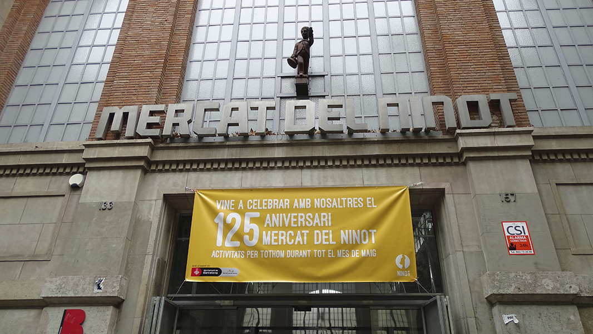

Coneix els millors mercats de Barcelona amb la millor varietat de productes de tot arreu del mòn i tot tipus d’informació arquitectònica.
T’oferim una ruta emblematica i amb història del mercats que han canviat la vida del seus veïns des de cents d’anys i també una menció honorífica d’un mercat no alimentari.
Localitza’t a La Rambla, La Boqueria es una gran afluent de turisme i un dels mercats més antics de Barcelona. A La Rambla hi podem trobar també tot tipus de paradetes interessants, des de floristeries fins a quioscos per comprar souvenirs, artistes a peu del carrer, ja siguin pintors o estatues, i botigues de dolços com gofres i crêpe. El Mercat està situat on estava abans el convent de Sant Josep, per això també se’l coneix com a Mercat de Sant Josep. La primera vegada que es va adonar a conèixer el mercat vas ser gràcies un document de l’any 1217, que deia “que un representant del rei ha concedit a un particular la propietat d’una taula per a trinxar la carn”.
Aquí venien els venedors ambulants i els pagesos dels voltants per vendre les seves hortalisses i fruites que cultivaven a la seva terra. Passada l’Edat Mitjana, es van anar establint mercats ambulants en diversos llocs ubicats al voltant de la Rambla que fomentaven el comerç.
A finals del segle XVIII va néixer la idea de reagrupar les diferents activitats mercantils en un lloc. A l’interior d’aquest recinte, pagesos i comerciants venien els seus productes i segueix sent así fins a l’actualitat. Tenen una gran varietat de menjars, amb més de 100 parades, bars, restaurants i tot tipus de parades. Desde sucs, fruita fresca, espècies i llaminadures fins a menjar d’altres països, passant per carn, embotits, llegums, mol·luscs i peix de tot tipus. El mercat té una coberta de ferro composta per cinc cossos idèntics sense tancament perimetral que va ser construïda el 1914 per l’empresa La Maquinista Terrestre y Marítima. A l’accés principal hi ha un arc modernista de 1913 de l’arquitecte A. de Falguera. És un portal de ferro decorat amb plafons de vidre de color blau i cercles grocs. Descansa sobre dues bases d’obra recobertes de trencadís a l’estil de Gaudí. De la part superior de l’arc penja un antic escut de la ciutat de Barcelona.
Sant Antoni
El mercat de Sant Antoni és un mercat d’alimentació i Mercat del Llibre Dominical al barri de Sant Antoni. L’edifici, actualment remodelat, ocupa un gran espai entre els carrers de Comte d’Urgell, Tamarit, Comte Borrell i Manso. És una obra protegida com a Bé Cultural d’Interès Local.
Es va iniciar la construcció l’any 1879 per l’arquitecte Antoni Rovira i Trias, inspirat en els edificis de les Halles de París com el Mercat del Born i inaugurat per l’alcalde Rius i Taulet el setembre del 1882. L’any 2007 es va celebrar el 125è aniversari del mercat, el primer mercat fora de les muralles concebut per abastir tota la ciutat. El mercat es divideix en el Mercat del Fresc, el Mercat dels Encants i el Mercat Dominical del llibre. Per arribar al mercat hi ha diferents parades d’autobusos a prop del mercat i una estació de metro de Barcelona, la Linia 2 anomenada “Sant Antoni” son la manera amb transport públic més ràpida i propera.
És un dels més grans de Barcelona i agrupa tres mercats: el d’alimentació fresca, el de roba i el de llibres.Bastit el 1872 i inaugurat el 1882 per Rius i Taulet, alcalde en aquell moment. L’any 2009 es tanquen les instal·lacions del vell mercat i comença un projecte de remodelació que es veurà endarrerit a causa de les restes arqueològiques que s’hi van trobar. La inauguració del nou mercat té lloc el 23 de maig de 2018 i va ser una gran afluent de turisme per als veïns.
Quan es va començar la remodelació al mercat de Sant Antoni aquest va ser objecte de diverses fases d’intervenció arqueològica des de març de 2007. En aquests primers sondejos, quan el mercat encara estava en funcionament, es va localitzar el baluard de Sant Antoni, cosa que ja s’havia identificat als estudis d’impacte. La seva conservació i integració ja es va preveure en el projecte de remodelació integral. Entre juliol i desembre de 2009, un cop el mercat va estar buit de parades, uns nous sondejos arqueològics van permetre localitzar altres trams del baluard i part del glacis del sistema defensiu. També es va localitzar un tram de la carretera de Madrid, de la segona meitat del segle XIX. La rehabilitació del Mercat ha inclòs el projecte de remodelació de l’antic baluard de Sant Antoni, que formava part de la muralla del segle XVII, que separava l’antiga ciutat del nou Eixample, i que es pot visitar a la -1. Aquest carrer, restarà obert en horari comercial i més enllà d’aquest horari, en les hores d’obertura habituals dels interiors d’illa.
Els diumenges al voltant del mercat i sota unes marquesines construïdes específicament per a les parades d’aquest mercat vell es venen llibre de segona mà. Es un del més grans d’Europa. A més de vendre llibres es venen llibre vell i de segona mà, contes, còmics, segells, monedes, cromos, calendaris, revistes, pòsters, pel·lícules i vídeos, videojocs i música en suport magnètic. Gràcies a la remodelació del mercat, aquest es un bon lloc per passejar els diumenges i gaudir de les antiguitats que ofereixen i l’estructura del mercat.
Galvany
Ja hi havia un mercat a l’aire lliure de pagesos i peixaters als terrenys que el comte de Galvany va cedir perquè s’hi construís un mercat cobert. Tot i que la seva construcció es va iniciar el 1868, no va ser fins al 1927 que va tenir lloc la inauguració definitiva. El Mercat Galvany és un mercat municipal de Barcelona. Es un edifici amb elements noucentistes, de l’arquitectura del ferro i modernistes, és una obra del Patrimoni Arquitectònic de Catalunya. El Mercat Galvany està ubicat a Sarrià-Sant Gervasi, ocupa els carrers Madrazo, Santaló, Calaf i Amigó. Com es recorda a dues plaques que hi ha al portal d’accés, la seva construcció es va iniciar l’any 1868 per Pere Falqués, en uns terrenys cedits per Josep Castelló i Galvany, i va ser finalitzada inaugurada el 26 de febrer de l’any 1927 per Antoni de Falguera.
A l’actualitat amb més de 100 parades, 900 metres quadrats i milers d’especialitats entre les quals hi trobem productes principalment artesanals i de kilometro 0, catalans com vins, formatges, iogurts o conserves. Tenen un servei gratuït de comandes a domicili de mes de 80 parades les quals ofereixen la máxima qualitat dels productes del mercat. Té un ample parking amb vuitanta places, botigues de roba i seguretat tot el día al exterior del recinte.
Mercat que ocupa una illa de cases completa i que està projectat en planta de creu grega permetent alliberar les quatre cantonades com a espais de càrrega i descàrrega de mercaderies. La nau del mercat, d’obra vista, té una gran cúpula central octogonal, que s’aguanta sobre quatre grans arcs i amb cadascun dels vuit costats decorats amb vitralls modernistes. La coberta consisteix en una estructura metàl·lica i una capa de làmines de fusta. A l’interior del mercat, vint-i-vuit columnes de ferro ajuden a sostenir la coberta. L’edificació està concebuda a partir de dues naus de secció basilical, que s’entronquen en una rotonda octogonal que organitza la distribució interior per permetre’n la ventilació superior. Bastit en obra vista segueix un llenguatge molt proper al noucentisme.
L’edifici té quatre majestuoses façanes al final de cada un dels extrems de la nau, cadascuna decorada amb nou arcs interiors. A la part superior de cada arc hi ha un petit vitrall modernista de colors i uns mosaics que formen l’antic escut de la ciutat. A les façanes laterals i a la cúpula hi ha més vitralls modernistes que sens dubte són l’element estrella d’aquest mercat. A l’interior, al bell mig del mercat i entre dues parades s’aixeca un fanal modernista amb un rellotge d’època a la part superior. Tanca el recinte un potent mur de paredat comú amb pilastres grosses que li confereixen una imatge conventual que resol, però, els aspectes més funcionals del mateix: mercaderies, deixalles, etc...
Llibertat
El Mercat de la Llibertat és un mercat d’alimentació situat al barri Vila de Gràcia, al Districte de Gràcia. L’edifici ocupa una illa entre els carrers de l’Oreneta, Milton, Sant Gabriel i Sant Cristòfor. És una obra protegida com a Bé Cultural d’Interès Local. L’alcalde Francesc Rius i Taulet va impulsar del 1858 al 1888 la cobertura de bona part dels mercats de la ciutat de Barcelona que fins llavors eren places descobertes. Aquesta iniciativa va permetre un millor resguardament de les inclemències del temps i, al mateix temps, un impuls arquitectònic i comercial. És el cas del mercat de Sant Antoni inaugurat el 1882, el mercat de la Llibertat inaugurat el 1888 i el de la Concepció i Hostafrancs.
Els terrenys del Mercat de la Llibertat situat a la vila de Gràcia pertanyien al terratinent Marc Olives que va disposar l’any 1831 que la seva finca s’hi edifiquessin edificis al voltant de la plaça que permetia la circulació de mercaderies i persones i una confluència de diferents carrers. L’edifici és de planta rectangular amb tres naus cobertes. L’edifici històric del Mercat de la Llibertat, el més antic de Gràcia va ser inaugurat el 1888 per l’arquitecte Miquel Pasqual i Tintoré. D’estil modernista, a la part central de la façana, unes peces de ferro molt treballades formen un preciós escut modernista de formes impossibles i l’acabament de la teulada, feta amb peces de ceràmica vidriada negra i rogenca, està rematada amb unes sanefes de ferro barnissat.
La coberta és feta de ferro amb un tancament perimetral d’obra vista. Tant en la part superior com inferior de l’estructura de ferro hi ha un seguit de plafons amb obertures horitzontals estretes que permeten el pas de l’aire, tot facilitant la ventilació del mercat. El mercat va ser objecte d’una remodelació finalitzada el 2009. La remodelació del mercat de la Llibertat és obra de l’arquitecte Josep Llobet, de PB2 Llobet-Bach Associats. La reforma va comptar amb l’aportació privada de més de 6 milions d’euros en un projecte que va representar una inversió total de 13,1 milions d’euros. Destaca la preservació arquitectònica d’un edifici modernista tot i la introducció de nous serveis (la implantació d’una àrea d’autoservei) i l’augment de la seva superfície utilitzable de 2.200 m2 a 4.400 m2.
Fruit d’aquesta reforma va ser l’increment de clients al mercat amb un augment de 884.000 clients, de 936.000 clients anuals a 1.820.000 anuals després de la reforma, la preservació arquitectònica d’un edifici modernista, la introducció de nous serveis com la implantació d’una àrea d’autoservei, prolongació dels horaris comercials amb l’obertura diària a les tardes. Aquest mercat asegura que els productes que venen son de proximitat que serveixen per promoure el comerç proper. Encara que la reforma va fer que l’afluent de persones que van a comprar augmentessi, la nostra experiència va ser una altre. No estava tan concorregut como hi podia estar el mercat de Sant Josep o el mercat de Galvany.
Ninot
El mercat del Ninot està ubicat al districte de l’Eixample, ocupant la meitat d’una illa de cases projectada per Ildefons Cerdà delimitada pels carrers Mallorca, Casanova, Villarroel i Provença. Es tracta d’un edifici aïllat en un solar de planta rectangular, amb façana principal al carrer Mallorca, i accessos als carrers Casanova i Villarroel, així com al passatge posterior que separa el solar de la resta d’edificis de l’illa de cases. La planta s’organitza en forma de T donant lloc a dos patis laterals afrontats al carrer Mallorca.
L’estructura és metàl·lica formada per tres cossos, els dos laterals subdividits en tres cobertes a dues aigües, amb la central a un nivell més alt per permetre la ventilació. El conjunt està tancat per una paret de maó vist fins a uns tres metres d’alçada. A sobre hi ha persianes que permeten la ventilació i un últim tram sota un potent ràfec tancat per vidre, que permet la il·luminació del mercat a la seva totalitat. L’accés principal es troba al cos central afrontat al carrer Mallorca. De caràcter monumental i estil noucentista, té un sòcol de pedra.

A sobre dos pilars monumentals sostenen un entaulament amb frontó, ornat amb l’escut de la ciutat. A sota, un gran arc esglaonat dóna pas, reculant una mica de la línia de façana, a un monumental finestral triforat que il·lumina l’interior del mercat. La resta de accessos responen al mateix sistema, però a un nivell menys monumental. Als anys 80 del segle XIX, en la taverna de Joan Clapés situada al carrer València núm. 9, es posà com a mostra un ninot. Aquest fet dóna nom a la taverna i al barri. A aquest indret, en aquell moment dins de les Corts de Sarrià, alguns pagesos de les Corts venen productes al voltant de la taverna per evitar pagar els impostos d’entrada de productes a Barcelona.
L’any 1889 l’Ajuntament de les Corts instal·la un mercat descobert a l’indret actual. L’any 1912 l’Ajuntament compra els terrenys per ampliar i construir definitivament el mercat del ninot. L’any 1933 es fa la inauguració del mercat actual, obra dels arquitecte Antoni de Falguera i Joaquim Vilaseca. Fins a les reformes que es van realitzar al 2012 al mercat a la porta principal hi havia una còpia de l’original, ja que l’original es troba al Museu Marítim de Barcelona.
Hostafrancs
El mercat d’Hostafrancs és un edifici aïllat situat entre els carrers Creu Coberta, Hostafrancs de Sió i Vilardell. És una obra de Barcelona protegida com a Bé Cultural d’Interès Local. Aquest mercat es va inaugurar el 1888 i és idèntic al mercat de la Concepció. Es obra d’Antoni Rovira i Trias, té una estructura de ferro amb tancament perimetral d’obra vista. La nau la formen tres cossos, un de central més gran i dos de laterals més petits i de menor alçada. A la part superior de la façana hi ha uns plafons de ferro amb petites obertures que permeten el pas de l’aire.
A la part mitja de la façana, el cos central hi té una estructura de ferro en forma d’arquets amb vidre a l’interior.Aquest mercat va abastir els treballadors de les antigues fàbriques que tenia a tot els voltants.En els terrenys que avui ocupa el mercat hi havia hagut una bòvila. Es va inaugurar el 1888, el mateix any que el Mercat de la Concepció, amb el qual són bessons, i l’any de la primera Exposició Universal que va acollir Barcelona. Antigament, en aquest mercat hi solien venir a comprar els treballadors de les nombroses fàbriques que hi havia als voltants.
El tancament de la major part d’aquestes fàbriques es va veure reflectit en l’activitat d’un mercat que, fins a la dècada del 1960, tenia les parades de fusta. La construcció d’aquest mercat respon a la necessitat d’abastir un barri que va tenir un gran boom demogràfic gràcies a les fàbriques que hi havia. L’ajuntament encarregà a Antoni Rovira i Trías la seva construcció en uns terrenys on hi havia hagut una bòbila. Es va inaugurar l’any 1888. Aquest arquitecte va fer per les mateixes dates el mercat de la Concepció i els dos edificis són idèntics.
Ha estat objecte de reformes als anys 80 i 90 del segle XX que han distorsionat la imatge original de l’immoble com la divisió interior en dos pisos. Gràcies al fet de la divisió interior del dos pisos ara també hi ha un Abacus a la segona planta pels usuaris.Té una superfície de 976,36 metres quadrats útils i una superfície total de 3495 metres quadrats. Encara que el mercat té una ample varietat de productes, ja siguin roba, material escolar o ingredients, la remodelació va fer que aquest mercat sigui un espai recluit.
Encants Vells
Des dels seus orígens, a l’Edat Mitjana, els Encants han recorregut bona part de la geografia barcelonina. La primera notícia que es té dels Encants és el mercat medieval que se celebrava al costat de les muralles, al camí del Rec, a mitjan segle XIV. Al segle XVI es va traslladar a la plaça Nova. Al segle XVII el trobem a la plaça de Sant Jaume. Al segle XVIII es trobava davant de la Llotja i a finals del segle XIX i principis del XX, a l’avinguda Mistral i el passeig de la Creu Coberta. Finalment, l’any 1928, i amb motiu de la celebració de l’Exposició Internacional de 1929, la fira es va traslladar per última vegada davant de la plaça de les Glòries.
El 23 de març de 1928, s’hi va desplaçar el primer venedor, Josep Font. Passats vuit dies ja hi havia 15 venedors, al cap d’un mes n’eren cinquanta i ràpidament es van depassar els 200 venedors. En un primer moment aquesta mudança no va ser fàcil: a l’avinguda Mistral i al passeig de la Creu Coberta es venia a la gent de pas; en canvi, a la plaça de les Glòries el client hi havia d’anar expressament.
La fira s’obre al públic a les nou del matí. Un bon lloc per començar-ne la visita és des de l’accés de l’avinguda Meridiana, just abans de la confluència amb la plaça de les Glòries. Aquí veurem el bar/restaurant Museo. Des d’aquesta entrada, accedim a uns carrerons conformats per unes parades de fusta. Aquí hi trobarem mobles nous de tot tipus i a bon preu. També matalassos, portes, llums i, fins i tot, cuines completes. A l’esquerra, veurem una placeta des d’on arribarem a la porta que dóna al carrer Dos de Maig.
Aquí, en el tram entre la plaça de les Glòries i Consell de Cent, trobarem parades ambulants dedicades a la venda de tot tipus de coses.Baixant per Dos de Maig fins a la plaça de les Glòries i tombant a la dreta, veurem unes escales que porten al passadís que concentra les parades de bricolatge i eines per a la jardineria. Passat aquest carreró, arribarem al camp de subhastes. El camp de subhastes és una plaça envoltada de parades fixes que ofereixen una infinitat d’objectes i ítems.
A l’interior de la plaça hi ha les parades dels lots subhastats. Si seguim recte pel passadís lateral fins al final de la plaça, trobarem un carreró cobert on es concentren els antiquaris, bàsicament de llibres i mobles antics. Algunes peces tenen més d’un segle d’antiguitat. Al final d’aquest carreró tornarem al camp de subhastes. Seguint el passadís lateral, i tombant a la dreta, veurem la zona de les marquesines, on encara hi ha més parades. En aquest sector podem trobar algun comerciant ambulant fent una demostració de la utilitat del seus productes.
Nascuda a principis del segle XIX durant l’ocupació francesa de Barcelona, era un mercat dominical d’andròmines i roba vella a la part alta de les Rambles, per damunt del Palau Moja. Durant el segle XIX, s’instal·laven tres feiners per setmana darrera la Llotja, a l’actual plaça d’Antoni López, i també a la plaça de la Constitució, l’actual plaça de Sant Jaume. L’any 1928 va ubicar-se al nord de les Glòries, entre els carrers d’Independència, Cartagena, Consell de Cent i Gran Via. La fira és coneguda popularment com els Encants Vells, per diferenciar-la dels Encants Nous, galeria comercial inaugurada l’any 1931 a iniciativa d’un grup de paradistes del Mercat Fira de Bellcaire, i ubicada en un indret proper, en la cruïlla dels carrers València i Dos de Maig.
La subhasta pública de mercaderies es realitza cada dilluns, dimecres i divendres de 7 a 9 del matí. La gran afluència de clients, al voltant de 100.000 setmanals, coneixedors d’aquesta oferta, el converteixen en un mercat únic pel reciclatge i la venda d’articles d’ocasió. La paraula encants prové, possiblement, de la manera com se subhasten els béns: cantant el preu. Altres hipòtesis etimològiques en situen l’origen en la construcció ‘en quant’? Encantar, en aquest sentit, vol dir ‘vendre a l’encant’ o ‘subhastar’. Encara una altra hipòtesi, explicada per Ramon Miquel i Planas derivaria del costum d’obrir el mercat dels Encants dia sí i dia no, i aquests serien els dies anomenats d’encants.
Aquest mercat es una experiència única en tots els sentits, una visita que ningú es pot perdre. A més, degut a estar situat a les Glòries, també és al costat del museu del Disseny i el Teatre Nacional de Catalunya, una visita també molt recomenable. Això sí, a causa de la seva popularitat és un mercat amb moltissima afluència de turistes i veïns, sobretot si aneu un dissabte o un diumenge. Hi podeu arribar amb metro agafant la línia 1 fins a la parada de Glòries o amb bus agafant el número 7. També hi conecta amb el tramvia T4, T5 i T6.